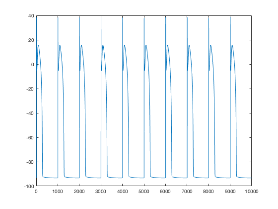
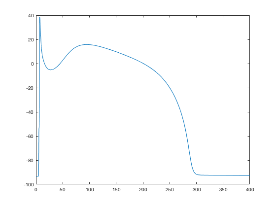

This is the readme for the model associated with the paper: Greenstein JL, Hinch R, Winslow RL (2006) Mechanisms of excitation-contraction coupling in an integrative model of the cardiac ventricular myocyte. Biophys J 90(1):77-91 doi: 10.1529/biophysj.105.065169 This model was contributed by JL Greenstein. To run: extract this archive and run the command "Script_40state" in matlab. After a short time this image should appear:  When the axes are zoomed in to the first 400 ms this is similar to the solid curve in Fig6 A in the paper:  Note: This model was formerly available at this link: http://www.ccbm.jhu.edu/doc/software/Coupled LCC-RyR40state.zip